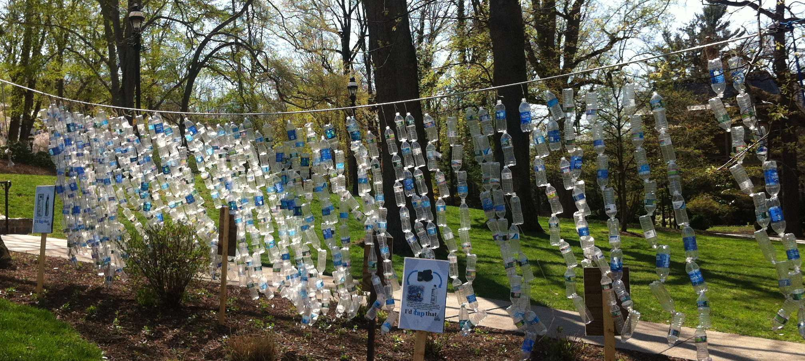
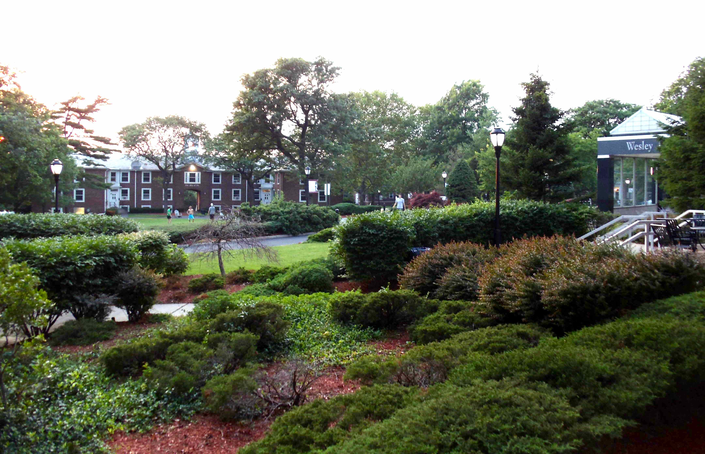
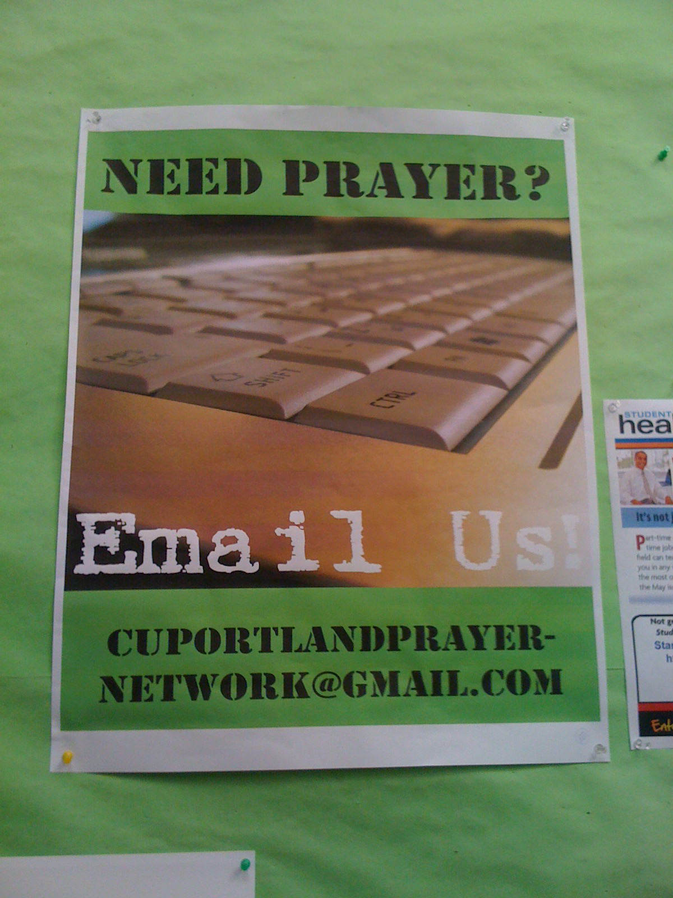

© Laurie Kiguchi
Lehigh University
Water bottle display on sustainability
|
Client login to GuidedPath |
Client login to CPP/SkillsOne |
Login to client-only resources |
College
and Career Planning Resources
Information overload!
There are many worthwhile publications and websites about college and career planning - too many, it may seem. With that in mind, Laurie Kiguchi draws on her experience as a college and career advisor to select those that seem most relevant and user-friendly (see also Hot Topics).
Clients take note! There is more stuff for you!
For even more resources on college planning, preparation, study skills, student opportunities (summer, gap year, volunteer), sports, financial aid, scholarships, and more, please visit "client-only resources" as well.
|
Login to client-only resources |

© Laurie Kiguchi
Stevens Institute of Technology
Beware of college rankings!
What Are College Rankings? by the National Association for College Admission Counseling
The Order of Things — What college rankings really tell us article by Malcolm Gladwell in The New Yorker
“Reviews and Opinions” Guides (user-friendly)
The Fiske Guide to Colleges by Edward B. Fiske (counselor input) **included in mycca.net program
The Best 377 Colleges by The Princeton Review
The Insider’s Guide to the Colleges: Students on Campus Tell You What You Really Want to Know - Yale Daily News - info direct from students
America's Best Colleges for B Students by Tamra Orr
Cool Colleges for the Hyper-Intelligent, Self-Directed, Late-Blooming, and Just Plain Different by Donald Asher
Colleges That Change Lives by Loren Pope, Revised by Hilary Oswald (4th edition, 2012)
“Objective Data” Guides (encyclopedic)
College Board’s College Handbook
Peterson’s Guide to Colleges

© Laurie Kiguchi
A Message from Concordia University Portland
The Value of a Liberal Arts Education
Liberal Arts Grads Win Long-Term Inside Higher Ed article on future success of liberal arts grads
Students Struggle for Words Wall Street Journal describes need for writing skills
Buying a Refrigerator, Choosing a College The Chronicle of Higher Education weighs in on “buying” a college education
In an Age of Metrics, Liberal Arts Education Still Holds Value — Duke University president addresses the future of liberal arts education
College (Un)bound — The Future of Higher Education and What It Means for Students by Jeff Selingo (2013)
Academically Adrift: Limited Learning on College Campuses by Richard Arum (2011)
Avoiding the Frenzy — Finding a Match and Keeping Perspective
Less Stress, More Success by Marilee Jones and Kenneth Ginsburg (2006)
Reasons for Hope While Applying to College — real life approaches to thinking about college admissions and college choice
The Passion of Parenting — thoughts about keeping perspective on raising children
How to Be a High School Superstar: A Revolutionary Plan to Get into College by Standing Out (Without Burning Out) by Cal Newport (2010)
The Match Between You and MIT — apply these ideas to match with any college or university
Ditching Boys — Why Attending a Women's College is a Great Idea — an idea worth considering, especially if you are a female
State of College Admission — report by the National Association for College Admission Counseling
Developing Strengths for Success
How Children Succeed: Grit, Curiosity and the Hidden Power of Character by Paul Tough (2013)
Mindset: The New Psychology of Success by Carol Dweck (2007)
Learned Optimism: How to Change Your Mind and Your Life by Martin Seligman (2006)
© Laurie Kiguchi
Rensselaer Polytechnic Institute
College Search Engines and Databases
bigfuture.collegeboard.org – official website of the College Board Big Future college planning site
act.student.org – official website of the ACT
ctcl.org – Colleges That Change Lives – info about the CTCL colleges
unigo.com – online reviews, documents, videos, and photos created by students at more than 1600 colleges across the country
collegeXpress.com – college search, lists, scholarships, and summer programs
YOUniversityTV.com – one-stop shopping for videos of colleges, student reviews
nces.ed.gov/collegenavigator – College Navigator – U.S. Dept. of Ed. college data and search engine
collegecost.ed.gov/scorecard/index.aspx – U.S. Dept. of Ed College Scorecard for college fit and affordability
collegeview.com – SuperMatch college search, college profiles, scholarship info
cappex.com – college search, college profiles, scattergrams, scholarship info
collegedata.com – college search by region, college profiles, admissions chances
getmetocollege.org – college search aimed at lower income students with fewer resources, run by Professor Rebecca Joseph of Cal State LA
fairtest.org – search for colleges and universities that are test-optional in admissions by FairTest, The National Center for Fair and Open Testing
commonapp.org – official website of the Common Application
College websites – general and admissions info. admissions office blogs, twitter, facebook
College Visits
GoSeeCampus.com – free tool for planning college trips plus college videos
http://www.cappex.com/page/tripPlanner/tripPlannerLanding.jsp – Cappex college campus visit planner
http://www.welcometocollege.com – resources for planning college visits plus ratings/comments by students who have visited
http://www.quad2quad.com/ – mobile app for planning college visits, including tour days and times!
Tip Sheet: A Family's Lessons From the College Tour from the New York Times The Choice blog with links to related posts
getmetocollege.org – Diversity College Weekend Visits compiled by Get Me to College organization, run by Professor Rebecca Joseph of Cal State LA
© Laurie Kiguchi
University of California Merced
California and Western
Colleges/Universities
universityofcalifornia.edu/admissions – official UC admissions website – check individual campus websites also
University of California – news about the UC system:
University of California – UCTV Education News:
hs-articulation.ucop.edu/agcourselist/ – UC database for a-g courses for high schools, community colleges, and approved online providers
csumentor.edu – official California State University admissions website – check individual campus websites also
assist.org – website for CA public college/university transferability and majors
CaliforniaColleges.edu – overview of CA private and public colleges
wue.wiche.ed – Western Undergraduate Exchange, offering reduced out-of-state tuition at participating two- and four-year institutions
Testing, Test Preparation
sat.collegeboard.org/about-tests – official website of the College Board for PSAT, SAT, and SAT Subject Test information
actstudent.org – official website of the ACT – LOTS of useful info
number2.com – free practice SAT tests and prep including strategy
khanacademy.org – dynamic online individualized test prep in association with the College Board; keys to student's own PSAT and test prep results; free short video tutorials on math, science, humanities, and test prep
Kaplan SAT Quiz U – free app for iPhone and iPad by Arcadia Prep, Inc. Just ONE of MANY free test prep apps.
Test Prep and Tutoring Resources Where Students Have Had Good Experiences
compassprep.com – Compass Education Group. Individual test prep in your home.
catalystprep.com – Catalyst Test Prep. Individual test prep in your home. Also offer boot camps but these are not recommended.
applerouth.com – Applerouth Tutoring Services. Interactive one-on-one tutoring in online format for academic support and test preparation; not inexpensive but a high quality online option.
arborbridge.com – ArborBridge Tutoring and Test Prep Services. Interactive one-on-one tutoring in online format for academic support and test preparation; not inexpensive but a high quality online option.
tutoringclub.com – The Tutoring Club. Individual tutoring and test prep at several locations, including Scotts Valley, Capitola, and Watsonville.
ca.higherstandards.biz – Higher Standards Academy test prep and math tutoring. Small groups and private instruction.
universitytutor.com – Search engine for individual tutors, by subject and location.
© Laurie Kiguchi
Colorado School of Mines
Financial Aid and Scholarships
College websites!!! – look for financial aid policies plus scholarship opportunities
http://www.csac.ca.gov – Fund Your Future - guide to financial aid from CA Student Aid Commission
studentaid.ed.gov – federal website for student aid – FAFSA, grants, loans
studentaid.ed.gov/fafsa –official website for Free Application for Federal Student Aid (FAFSA), link to estimator for Expected Family Contribution (EFC)
collegecost.ed.gov – federal College Affordability and Transparency Center
profileonline.collegeboard.com – College Board website for CSS/Financial Aid PROFILE application
finaid.org – info on financial aid, scholarships, financial aid calculators
edvisors.com – easy to use info on the financial aid process — tips for understanding aid, getting, aid, filing the forms, student loans, loan repayment
collegerealitycheck.com – interactive tool to compare college costs across institutions by the Chronicle of Higher Ed and the Bill and Melinda Gates Foundation
fastweb.com, zinch.com, collegeboard.com, scholarships.com, collegexpress.com – register to be matched to many private scholarships
meritaid.com – merit aid search engine
The College Solution – resources and a blog and about financial aid news and advice
Need financial advice about paying for college? Try Stephen Shapiro, CPA - Tuition Solutions Now
© Laurie Kiguchi
St. John's College Santa Fe
Transition to College - For Students
Been There, Should Have Done That, 3rd ed. by S. Tyler, 2008. Lansing, MI: Front Porch Press. (funny, easy to read)
How to Survive Your Freshman Year, 4th ed. by S.C. Silverman and F. Northcutt, 2010. Atlanta, GA: Hundreds of Heads Books. (funny, extensive, conversational)
How to Win at College: Surprising Secrets for Success from the Country's Top Students. by C. Newport, 2005. New York: Broadway Books. (some counter-intuitive suggestions to consider, conversational)
Cal Newport's blog is interesting too: http://calnewport.com/blog/ – observations and advice that cut to the chase.
Textbooks can be bought new or used, sold back after use, rented, and also accessed as e-books. Read about Google selling them online.
Clients! For resources on learning to learn - building your strategies and skills for studying,
please go to the "client-only resources" page.
Login to client-only resources
Transition to College - For Parents
The Passion of Parenting — thoughts about keeping perspective on raising children
The Launching Years: Strategies for Parents from Senior Year to College Life. by L. Kastner, 2003. Three Rivers Press. (thoughtful ideas from clinical psychologist and clinical associate professor of psychiatry and behavioral sciences at the University of Washington)
Don't Tell Me What to Do, Just Send Money: The Essential Parenting Guide to the College Years. by H. Johnson and C. Schelhas-Miller, 2011. New York: St. Martin's Griffin. (funny but comprehensive, useful advice from and founder of Cornell Univ.'s first Parents' Program and a former Cornell Dean)
Empty Nest, Full Heart: The Journey from Home to College by A. Van Steenhouse, Ph.D., 2002. Denver: Simpler Life Press (practical advice from a psychologist mom)
Parenting Secrets of a College Professor – amusing take on sending your children off to college
I'm Going to College – Not You! Surviving the College Search with Your Child edited by J. Delahunty, Dean at Kenyon College, 2010. New York: St. Martin's Griffin. (writings by admissions directors, college professors, authors, and journalists addressing issues from how a parent can be less of a "helicopter" and more of a "booster rocket" to how will you keep from wanting to kill each other)
Graduation Wisdom – Look Behind You – thoughts on appreciating what's past
Getting Your Legal House in Order Before Your Adult Child Leaves for College – tips for being able to serve as legal decision-maker for medical and educational issues regarding your child
Stay calm. There are very few true emergencies.
Don't just do something, stand there. Let your children learn to take care of themselves.
© Laurie Kiguchi
St. Joseph's University in Philadelphia
Careers and Majors
http://www.forbes.com/sites/jacquelynsmith/2013/09/18/the-top-100-websites-for-your-career/ – CHECK THESE OUT! Forbes Top 100 Websites for Your Career
https://myroad.collegeboard.com/myroad/navigator.jsp – My Road college majors and career planning tool
http://www.actstudent.org/career/ – ACT career planning, college majors, World of Work
http://www.onetonline.org – occupation information and career preparation, based on data from the U.S. Dept. of Labor
http://www.collegemajors101.com – all you want to know about college majors
http://www.cacareerzone.org – career planning tools and information
http://www.whoi.edu/oceanus/series/rebuilding-alvin – a look at the many types of jobs required for one particular project: Rebuilding Alvin – Conversations with the People Who Designed and Built the New and Improved Version of the Submarine
Your future depends on many things, but mostly you.
— Frank Tyger